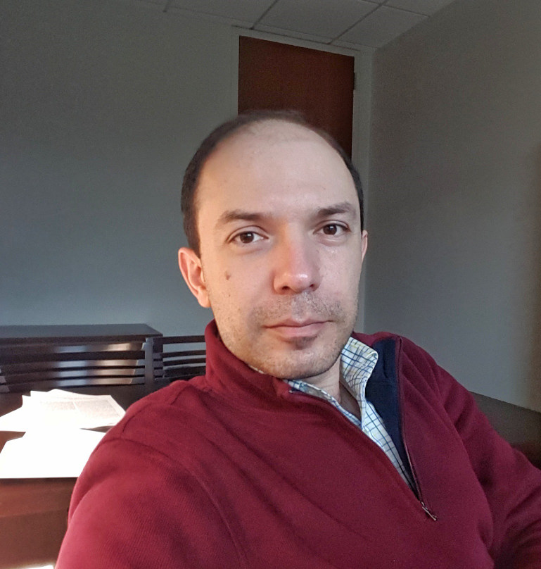

Sohail BahmaniPostdoctoral FellowSchool of Electrical and Computer Engineering Georgia Institute of Technology [first name]DOT[last name]AT[ece.gatech.edu] |
 |
Research Interests
My primary research interest is algorithmic and theoretical aspects of statistical inference in areas such as signal processing, machine learning, and network analysis. My motivation is to design provably accurate and computationally efficient algorithms for statistical problems that arise in different applications, using probability theory, information theory, statistics, and optimization.
Education and Appointments
- Postdoc, Georgia Institute of Technology, 2013–present
- PhD in ECE, Carnegie Mellon University, 2009–2013
- Master's in Engineering Science, Simon Fraser University, Canada, 2007–2008
- Bachelor's in EE, Sharif University of Technology, Iran, 2002–2006
Research Vignette
Problem statement
Consider the problem of estimating an \(N\)-dimensional signal \(\boldsymbol{x}_\star\) from observations of the form \begin{align} y_m & = f_m(\boldsymbol{x}_\star) + \xi_m & m=1,2,\dotsc,M\,, \label{cvxreg} \end{align} where the functions \(f_m\) are i.i.d. copies of a randomly drawn convex function \(f\), and the noise terms are represented by \(\xi_m\). Despite the convexity assumption on the functions \(f_m\), the observation model \eqref{cvxreg} is quite general and includes many standard statistical models as the special case including generalized linear models and single hidden layer neural nets. I addressed the general regression problem \eqref{cvxreg} in [BR17b] building upon ideas I developed in [BR17a] to address a special case often known as phase retrieval. It is more illustrative to begin my explanation with this special case as well.
A new approach to phase retrieval
The problem of phase retrieval appears in areas such as imaging and optics where the sensors often measure only intensities; the sign- (or phase-) information is generally lost. The observation model in the phase retrieval problem, assuming no noise in the measurements, can be abstracted as the system of quadratic equations \begin{equation*} \begin{aligned} y_1 & = |\boldsymbol{a}_1^*\boldsymbol{x}_\star|^2\\ y_2 & = |\boldsymbol{a}_2^*\boldsymbol{x}_\star|^2\\ \vdots & \qquad\vdots\\ y_M & = |\boldsymbol{a}_M^*\boldsymbol{x}_\star|^2\,, \end{aligned} \end{equation*} for \(\boldsymbol{x}_\star\in\mathbb{C}^N\). Clearly, this model corresponds to \eqref{cvxreg} with \(f_m(\boldsymbol{x}) = |\boldsymbol{a}_m^*\boldsymbol{x}|^2\) for i.i.d. draws of \(\boldsymbol{a}_m\), and \(\xi_m=0\). In [BR17a], I formulated a new estimator for this problem as the convex program \begin{equation} \begin{aligned} \operatorname*{argmax}_{\boldsymbol{x}}\ & \mathrm{Re}(\boldsymbol{a}_0^*\boldsymbol{x}) & \\ \text{subject to}\ & |\boldsymbol{a}_m^*\boldsymbol{x}|^2 \le y_m, & m=1,2,\dotsc,M\,, \end{aligned} \label{linmax} \end{equation} where \(\boldsymbol{a}_0\) denotes an “anchor vector” that obeys \begin{equation*} |\boldsymbol{a}_0^*\boldsymbol{x}_\star| \ge \delta \left\lVert\boldsymbol{a}_0\right\rVert_2 \left\lVert\boldsymbol{x}_\star\right\rVert_2\,, \end{equation*} for some absolute constant \(\delta \in (0,1]\). The anchor vector can be constructed from random observations similar to initializations in some non-convex methods (e.g., Wirtinger Flow); the details can be found in the paper. Here, I explain the geometric intuition behind \eqref{linmax} in the case of real-valued variables for clarity. As illustrated in Figure 1, each of the constraints in \eqref{linmax} form a slab of feasible points, whose intersection is a convex polytope \(\mathcal{K}\). Clearly, \(\boldsymbol{x}_\star\) is an extreme point of \(\mathcal{K}\). The solution to \eqref{linmax} is also always an extreme point of \(\mathcal{K}\), since it is a solution to linear maximization over the convex body \(\mathcal{K}\). The key observation is that if the anchor vector \(\boldsymbol{a}_0\) has a non-trivial component in the direction of \(\boldsymbol{x}_\star\), we can expect that the extreme point found by \eqref{linmax} coincides with \(\boldsymbol{x}_\star\).

Using classic results from statistical learning theory, I showed that with high probability \begin{equation*} M = C_\delta N \end{equation*} independent random measurements suffice to recover \(\boldsymbol{x}_\star\) using \eqref{linmax}, with \(C_\delta\) being an absolute constant depending only on \(\delta\). Robustness under specific noise models is also addressed in the paper.
Why does \eqref{linmax} matter?
Previous convex relaxations for phase retrieval (e.g., PhaseLift, and PhaseCut) were based on the idea of lifting and semidefinite programming (SDP). While lifting-based methods are technically computationally tractable, their dependence on SDP prohibits their scalability. In contrast, \eqref{linmax} operates in the natural domain of the problem and competes with non-convex methods for phase retrieval (e.g., Wirtinger Flow). It also benefits from versatility, flexibility, and robustness that is associated with convex programming. More importantly, as discussed below, the principles used in formulation and analysis of \eqref{linmax} apply in a more general setting.
What about the general case \eqref{cvxreg}?
In [BR17b], I proposed the convex program \begin{equation} \begin{aligned} \operatorname*{argmax}_{\boldsymbol{x}}\ & \langle \boldsymbol{a}_0,\boldsymbol{x}\rangle \\ \text{subject to}\ & \sum_{m=1}^M \max\{f_m(\boldsymbol{x})-y_m, 0\} \le \varepsilon\, , \end{aligned} \label{anchored_reg} \end{equation} where \(\boldsymbol{a}_0\) is an “anchor vector” that obeys \begin{equation*} \langle\boldsymbol{a}_0,\boldsymbol{x}_\star\rangle \ge \delta \left\lVert\boldsymbol{a}_0\right\rVert_2\left\lVert\boldsymbol{x}_\star\right\rVert_2\,, \end{equation*} as an estimator for the general regression problem \eqref{cvxreg}. Some schemes for constructing the anchor from the measurements are described in the paper, but we omit the discussion for brevity. Furthermore, to avoid technical details, here I state the main result of the paper (i.e., Theorem 2.1) on the sample complexity of \eqref{anchored_reg} in an informal way. In the proved bound, there are two important quantities. The first quantity, \(\mathfrak{C}_M(\mathcal{A}_\delta)\), measures the “size” of a set \(\mathcal{A}_\delta\) that depends only on \(\boldsymbol{x}_\star\) and \(\delta\), with respect to the randomness in the gradients \(\nabla f_m(\boldsymbol{x}_\star)\). The second quantity, \(p_\tau(\mathcal{A}_\delta)\), is some measure of the “eccentricity” of the random vector \(\nabla f_m(\boldsymbol{x}_\star)\) with respect to the set \(\mathcal{A}_\delta\) in terms of a parameter \(\tau\). Ignoring some details, the result established in [BR17b] basically states that \begin{equation*} M \gtrsim \left(\frac{\mathfrak{C}_M(\mathcal{A}_\delta)}{\tau p_\tau(\mathcal{A}_\delta)}\right)^2\,, \end{equation*} measurements are sufficient to guarantee that \eqref{anchored_reg} yields an accurate estimate.
Bibliography
[BR17a] S. Bahmani and J. Romberg, Phase
retrieval meets statistical learning theory: A flexible
convex relaxation,
In Proceedings of the
20th International Conference on Artificial Intelligence
and Statistics (AISTATS'17), vol. 54 of Proceedings
of Machine Learning Research , pp. 252–260.
[BR17b] S. Bahmani and J. Romberg, Solving equations of random convex functions via anchored regression,
preprint: arXiv:1702.05327 [cs.LG]
An important characteristic of networks in many applications is their connectivity which is often a crucial factor in the performance of the network. An interesting and important problem is then to measure robustness of the connectivity under some form of perturbation of the network. Site percolation, or simply random removal of nodes as illustrated in Figure 2, is one of these perturbation models that is studied in mathematics and statistical physics.

Algebraic connectivity of a graph is a an analytical measure of connectivity that is also related to the conductance of the graph through the Cheeger's inequality. Formally, the algebraic connectivity of a graph with the adjacency matrix \(\boldsymbol{A}\) can be defined as the second smallest eigenvalue of the graph Laplacian \(\boldsymbol{L} = \boldsymbol{D} - \boldsymbol{A}\) where \(\boldsymbol{D}=\mathrm{diag}(\boldsymbol{A}\boldsymbol{1})\) is the diagonal matrix of the vertex degrees. In [BRT17c], using tools from random matrix theory I derived a lower bound for algebraic connectivity of a graph that survives from a generally non-homogeneous site percolation. In the special case of homogeneous site percolation over a certain class of regular graphs, our analytical result virtually coincides with the state-of-the-art that is established using refined combinatorial arguments.
Bibliography
[BRT17c] S. Bahmani, J. Romberg, and P. Tetali, Algebraic connectivity under site percolation in finite weighted graphs,
to appear in IEEE Trans. Network Science and Engineering.
Talks
- Solving Equations of Random Convex Functions
Efficiently:
11/17 Machine Learning Department, Carnegie Mellon University
8/17 Adobe Research - Phase Retrieval Meets Statistical Learning Theory:
4/17 IBM T.J. Watson Research Center
4/17 Artificial Intelligence and Statistics conference (AISTATS'17)
2/17 Information Theory and Applications workshop (ITA'17)
2/17 Stochastic Seminar, School of Mathematics, Georgia Tech. - Structured Matrix Estimation in High Dimensions
6/16 School of Mathematics, University of Edinburgh
Publications
- Journal Paper
- Conference Paper
- Preprint
- Technical Report
Preprints
- S. Bahmani and J. Romberg,
Solving equations of random convex functions via anchored regression,
submitted, 2017. arXiv
2017
- S. Bahmani and J. Romberg,
A flexible convex relaxation for phase retrieval,
Electronic Journal of Statistics, 11(2):5254–5281, 2017. (This is an extended version of the AISTATS’17 paper.) Proj. Euclid - S. Bahmani, J. Romberg, P. Tetali,
Algebraic connectivity under site percolation in finite weighted graphs,
to appear in IEEE Trans. on Network Science and Engineering. arXivIEEEXplore - S. Bahmani and J. Romberg,
Phase retrieval meets statistical learning theory: A flexible convex relaxation,
In Proceedings of the 20th International Conference on Artificial Intelligence and Statistics (AISTATS'17), vol. 54 of Proceedings of Machine Learning Research , pp. 252–260. (Best paper award) arXivPMLR
2016
- S. Bahmani and J. Romberg,
Near-optimal estimation of simultaneously sparse and low-rank matrices from nested linear measurements,
Information and Inference, 5(3):331–351, 2016. arXivOxford Journals - S. Bahmani, P. Boufounos, and B. Raj,
Learning model-based sparsity via projected gradient descent,
IEEE Trans. Info. Theory, 62(4):2092–2099, 2016. arXivIEEEXplore
2015
- S. Bahmani and J. Romberg,
Sketching for simultaneously sparse and low-rank covariance matrices,
in Computational Advances in Multi-Sensor Adaptive Processing (CAMSAP'15), IEEE 6th International Workshop on, pp. 357–360, Cancun, Mexico, Dec. 2015.IEEEXplorearXiv - S. Bahmani and J. Romberg,
Efficient compressive phase retrieval with constrained sensing vectors,
in Advances in Neural Information Processing Systems (NIPS'15), vol. 28, pp. 523–531, Montréal, Canada, Dec. 2015. arXivNIPS - S. Bahmani and J. Romberg,
Lifting for blind deconvolution in random mask imaging: Identifiability and convex relaxation,
SIAM Journal on Imaging Sciences, 8(4):2203–2238, 2015. arXivSIAM - S. Bahmani and J. Romberg,
Compressive deconvolution in random mask imaging,
IEEE Trans. on Computational Imaging, 1(4):236–246, 2015. arXivIEEEXplore
2013
- S. Bahmani, B. Raj, and P. T. Boufounos,
Greedy sparsity-constrained optimization,
Journal of Machine Learning Research, 14(3):807–841, 2013. JMLRarXivCode - S. Bahmani, P. Boufounos, and B. Raj,
Robust 1-bit compressive sensing via gradient support pursuit,
Apr. 2013. arXiv
2012
- S. Bahmani, B. Raj,
A unifying analysis of projected gradient descent for \(\ell_p\)-constrained least squares,
Applied and Computational Harmonic Analysis, 34(3):366–378, 2012. ElsevierarXiv
2011
- S. Bahmani, P. Boufonos, and B. Raj,
Greedy sparsity-constrained optimization,
in Conf. Record of the 45th Asilomar Conference on Signals, Systems, and Computers (ASILOMAR'11), pp. 1148–1152, Pacific Grove, CA, Nov. 2011. IEEEXploreSlidesCode
2010
- S. Bahmani, I. Bajić, and A. HajShirmohammadi,
Joint decoding of unequally protected JPEG2000 images and Reed-Solomon codes,
IEEE Trans. Image Processing, 19(10):2693–2704, Oct. 2010. IEEEXplore
2009
- S. Bahmani, I. Bajić, and A. HajShirmohammadi,
Improved joint source channel decoding of JPEG2000 images and Reed-Solomon codes,
Proc. IEEE ICC'09, Dresden, Germany, Jun. 2009. IEEEXplore
2008
- S. Bahmani, I. Bajić, A. HajShirmohammadi,
Joint source channel decoding of JPEG2000 images with unequal loss protection,
Proc. IEEE ICASSP'08, pp. 1365–1368, Las Vegas, NV, Mar. 2008. IEEEXplore
Thesis
- S. Bahmani, Algorithms for sparsity-constrained optimization, PhD dissertation, Department of Electrical & Computer Engineernig, Carnegie Mellon University, Pittsburgh, PA, Feb. 2013. PDF